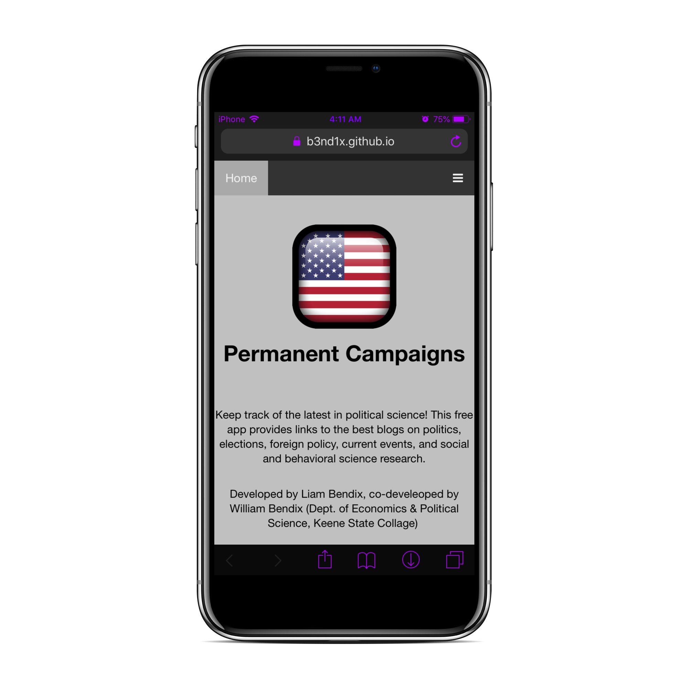
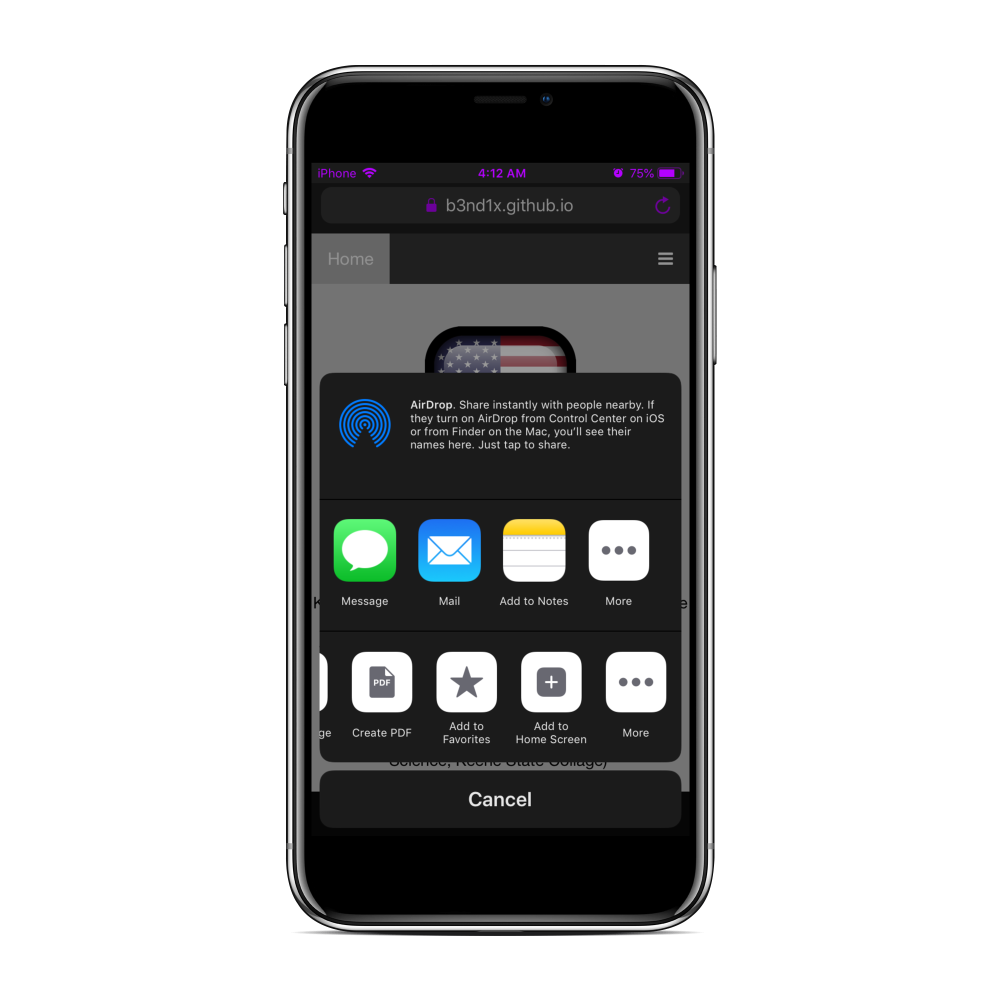
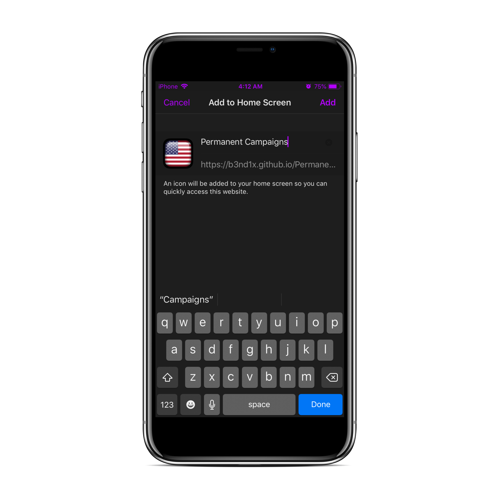
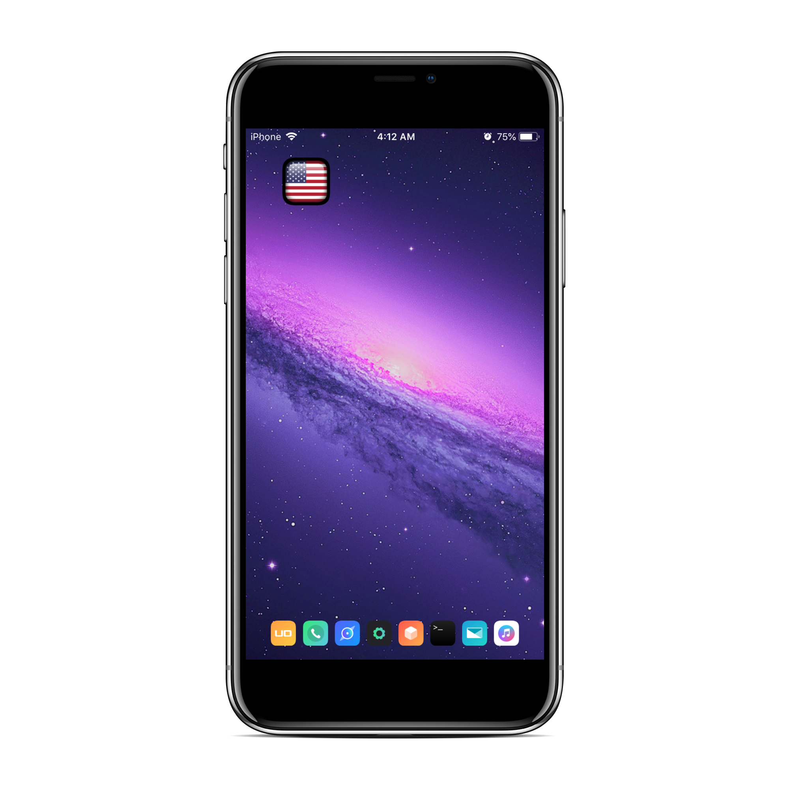

Note: $99 later, and two weeks of a wasting my time. All thanks to Apple's long, painful and hostile process of submitting a web application or rather, a hybrid aplication version 2.2 was rejected.
Version 1.0 was made available on both App Store and Google Play Store but has been since removed by me (Developer Liam Bendix) due to functionallity issues.
I simply made this web app as an alternative.
This is a fast and easy process of installing Permanent Campaigns on any mobile device for free!
As for if Permant Campaigns will ever be published on either App Store or Google Play again? I will be updating this information on this website.
For now, you can install it yourself via Safari or if you would like a native iOS version I have all source code available on github and you can sideload yourself.
1. Open Safari and go to "https://b3nd1x.github.io/PermanentCampaigns2.2-backend/"
2. As shown, hit the "Share" function of the browser (ie box with an arrorw at the bottom)
3. At the buttom (above cancel, slide left if you dont see it) you need to click "Add to Home Screen"
4. Safari Will prompt you to confirm, just hit add at the top right
Done! Thats all! Permanent Campaigns is successfully added to your device .
Devices supported: All iOS devices,This will require either XCode or Cydia Installer
1.
2.